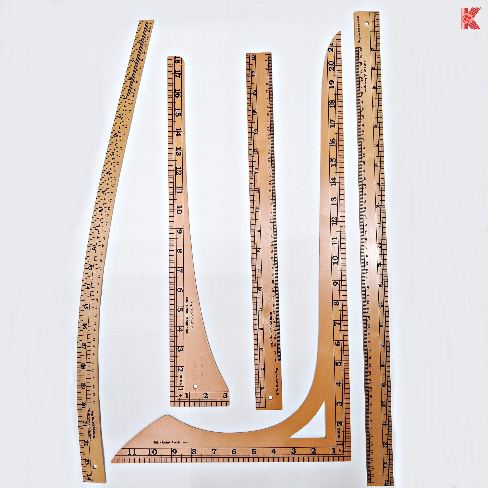

Digunakan untuk mengukur fabrik atau mengambil ukuran badan.
Pita Ukur

Digunakan untuk menanda pada fabrik.
Kapur Tukang Jahit

Digunakan untuk memindahkan tanda pola, garisan dan motif ke fabrik dengan menggunakan roda surih.
Kertas Karbon Tukang Jahit

Digunakan untuk mengukur dan menandakan pola.
Pembaris

Digunakan untuk memindahkan tanda pola ke fabrik.
Roda Surih

Digunakan untuk menyemat pola pada fabrik dan menetapkan dua atau lebih kepingan fabrik sebelum menjahit.
Jarum Peniti

Digunakan untuk memotong kain.
Gunting Fabrik

Digunakan untuk memotong kertas bagi membentuk pola.
Gunting Kertas

Digunakan untuk menjahit fabrik.
Jarum Jahit Tangan

Digunakan untuk menjahit fabrik dan menggunakan elektrik untuk berfungsi.
Mesin Jahit Mini

Digunakan untuk menjahit fabrik dan menggunakannya secara manual.
Mesin Jahit Tangan

Digunakan untuk menanggalkan dan membuang mata jahitan serta memotong lubang butang.
Peretas Jahitan